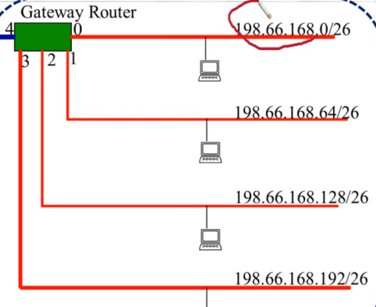
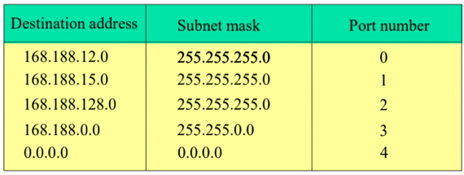
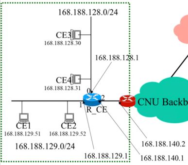
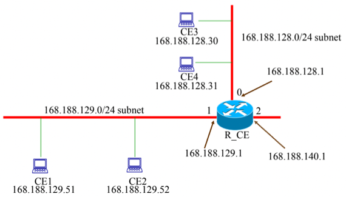
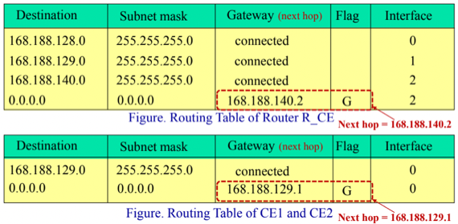
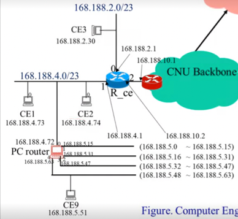
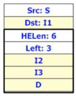
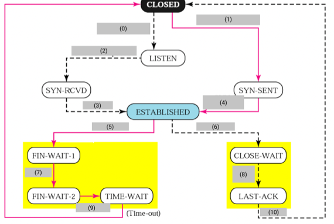
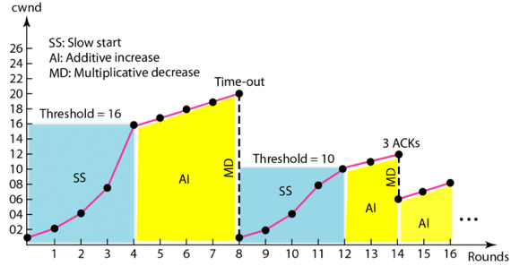
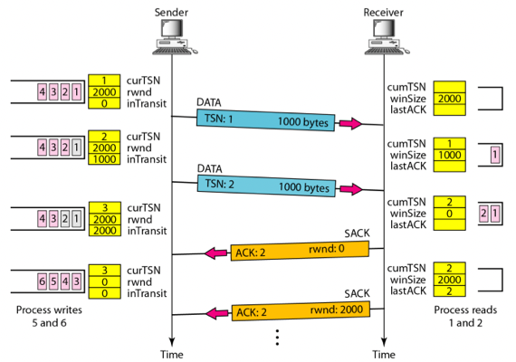

Fall 2021, CNU, Computer Networks by Prof. Sang-Ha Kim
Overview
- Physical layer, Data link layer, Network layer, Transport layer, Application layer 각각에 대한 주된 역할(기능)을 적으라
- 각 Layer를 코드로 구현함에 있어서, Transparency의 의미와 숨겨여야 하는것, 그렇지 않은 것에 대해 설명하고(1) Send와 Receive 함수 Call의 방향성에 대해 설명하시오(2)
Network Layer
Packet Switching
- Packet Switching을 제공하는 장비의 이름을 적고(1) Packet Switching의 개념을 해당 장비의 구조와 연관지어서 설명하시오(2)
- Datagram과 Virtual Circuit에 대해 이들이 시작될때 공통적으로 행해지는 작업에 대해 적고(1) 이들의 핵심적인 차이점에 대해 Connection-oriented, Connectionless, Orderly Delivery의 개념을 포함하여 적어보거라(2). 그리고 각 Packet Switching방법을 사용하는 프로토콜(서비스) 에 대해 적어보고, 어느것이 먼저 세상에 나왔는지를 그 이유와 함께 적어보거라(3). 또한 각각의 방법이 가지는 강점에 대해 설명해보아라(4).
- 아래와 같은 통신망이 있다고 해보자.

B → D로 Virtual Circuit을 이용해 패킷을 전송하려고 할때, Connection Phase, Data Transfer Phase, Disconnection Phase에 대해 이동하는 패킷의 구조와 Virtual Circuit Table의 변화를 포함하여 설명하시오(단, 이동 경로와 Virtual Circuit Number는 임의로 정해도 된다)
- Packet은 송신 후 Packet Header는 Hop to Hop을 이동함에 에 따라 변경되고 Frame Header는 최종 수신지에 도착할때까지 변경되지 않는다(O / X)
- 아래왜 같은 통신망이 있다고 해보자

이때,
- Connect: H1 → A → B → D → H2
- Connect: H2 → D → B → E → H4
- Connect: H5 → E → C → A → H1
- Connect: H1 → A → B → D → H3
- Disconnect: H2 → D → B → E → H4
- Disconnect: H1 → A → B → D → H2
- Disconnect: H5 → E → C → A → H1
위와 같은 쿼리에 대해 Virtual Circuit Table의 변화를 보이시오(단, Table의 구조는 다음과 같음 : InPort | InVC# | OutPort | OutVC#)
- Service Provider, UNI, NNI, External Operation, Internal Operation의 용어에 대해 무엇의 약자인지, 그리고 개념은 무엇인지 적어보거라
- External 과 Internal Operation에서의 Packet Switching을 이원화하는 이유와 이원화 경우의 수 대표적인 세가지를 적어보거라
Routing
- 2 level Hierarchy Routing Table의 개념과 이것이 필요한 이유를 netid, hostid의 용어를 이용하여 설명하여라
- IP주소 체계의 A, B, C Class의 IP 주소 범위에 대해 적어보거라
- netid와 hostid가 발급되는 과정에 대해 간략하게 설명해보거라
- Gateway router의 개념에 대해 설명하고 그것과 Gateway Router가 아닌 Router의 Routing 방법의 차이에 대해 설명해보거라
- 아래 그림의 Gateway Router의 Forwarding Table을 작성하시오(단, Table은 DestinationAddr | SubnetMask | PortNum으로 구성되어 있다고 가정한다). 또한, 각 Port에는 몇개의 Host가 연결될 수 있는지 적으시오

- 어떤 라우터가 Default Destination Port를 제외한 모든 Port의 Subnet Mask가 /27이었다면 해당 라우터는 Destination Port를 제외하고 몇개의 Port가 존재하는지(1), 그리고 하나의 Port에는 몇개의 Host가 연결되는지(2) 적으시오(단, 이 라우터에 연결되어 있는 Host의 총 갯수는 256개 이고 모두 같은 C Class netid를 가진다고 가정한다.)
- 어떤 라우터의 Forward Table이 아래 그림과 같을 때, 168.188.15.5, 168.188.7.32, 168.192.32.0세 IP가 Routing되는 Port Number를 과정과 함께 적으시오

- 어떤 Host의 IP를 설정할 때 IP주소는 192.168.32.5, Subnet Mask는 255.255.255.0, Default Gateway는192.168.32.1로 설정했을 때 해당 Host한테 생성되는 Routing Table을 그리시오(단, Routing Table의 구조는 Destination | Subnet Mask | Gateway | Flag | Interface로 구성되어 있으며 Interface는 0번만이 장착되어있다고 가정한다)
- 아래와 같은 그림에서 라우터 R_CE의 Routing Table을 그려라 (단, Routing Table의 구조는 Destination | Subnet Mask | Gateway | Flag | Interface로 구성되어 있다고 가정한다)

- 아래와 같은 네트워크 구조에서 CE1에서 CE2로 패킷을 전송하는 과정과 CE1에서 CE3으로 패킷을 전송하는 과정에 대해 전송되는 패킷의 송수신 IP, 물리 주소를 포함하여 설명하시오(단, 물리주소는 Node / Host의 이름과 같다고 가정한다)


- 장대동에 거주하는 강혜종이는 이번에 새로운 컴퓨터를 사서 IP를 설정하려고 한다. 그가 속한 Subnet은 192.168.2.0/24인데, 실수로 Subnet Mask를 255.255.0.0을 설정했다. 이때, 같은 Subnet에 속하는 Host와 통신이 이루어지는지의 여부와, 다른 Subnet에 속하는 Host와 통신이 이루어지는 경우와 이루어지지 않는 경우애 대해 설명하시오
- 아래와 같은 네트워크 구조에서 Proxy Router인 PC Router를 거쳐 CE3과 CE9가 양방향으로 통신하는 과정에 대해 전송되는 패킷의 송수신 IP주소와 물리주소를 포함하여 설명하시오

- Routing Table에서 Hop 혹은 Metric으로 표기되는 값에 대해 설명하시오
- Routing Table을 이용해 알아낸 Next-Hop의 IP주소는 패킷의 Tailer에 붙어 하위계층으로 전달된다(O / X)
IPv4
- IP가 Datagram을 사용하는 이유를 Heterogeneous Network의 용어를 포함해서 설명하시오
- IPv4를 대표하는 두가지 중요한 특징에 대해 설명하시오
- IPv4의 Header의 필드인 HLEN, Total Length에 대해 설명하고 HLEN의 최솟값과 그 이유, HLEN이 8이고 Total Length가 112일 경우 패킷의 Mandatory Header, Option, Data가 각각 몇 바이트인지 설명하시오
- IPv4에서 Fragmentation이 필요한 이유와 1500byte로 Fragmentation하는 이유를 MTU의 용어를 사용하여 설명하덤둥. 또한, Router에서 단편화된 패킷을 받았을때 어떻게 행동하는지 서술하시오. 마지막으로 IPv4 패킷의 Header에서 Fragmentation과 관련된 필드 세가지를 적으시오
- IPv4 Header의 Protocol, Header Checksum, Time to Live 필드에 대해 간략하게 설명하시오
- IPv4의 Option인 No operation, End of option, Record route, Strict source route, Loose source route, Timestamp에 대해 간단하게 설명하시오
IPv6
- IPv6의 가장 핵심적인 특징 두가지에 대해 적어보시오
- IPv6의 헤더 구조의 특징에 대해 설명하고, IPv4의 HLEN, Protocol, Header Checksum, Option 필드가 IPv6에서는 어떻게 바뀌었는지 서술하시오
- IPv6의 Next Header Field의 구조와 작동방식, Next Header가 참조되는 경우의 수에 대해 Dst Addr와 Hop-to-Hop Option을 이용해 설명하시오
- 어떤 IPv6 패킷 헤더의 모습이 다음과 같다고 할때

해당 패킷이 전송되는 과정과 Extension Header의 변화를 서술하거라(단, 위의 그림에 나와있는 Extension Header는 Source Routing이라고 가정한다)
Address Mapping
- ARP Cache에 대해 개념과 작동과정을 설명하고, 각 Entry의 지속시간에 대해 적어보아라
- 자신을 위한 ARP Reply가 아닐지라도 ARP Reply에 적힌 IP - 물리주소를 이용해 자신의 ARP Cache Table을 업데이트한다(O / X)
- ARP의 송수신 과정을 ARP Cache를 포함하여 설명하고, Proxy ARP의 작동과정 또한 설명하여라(단, 각 과정에 대해 패킷에 들어가는 송수신 물리주소와 IP주소를 명시하여라)
- ARP Packet의 각 Field에 대해 들어가게 되는 값과 연관지어서 설명하시오.(단, Field는 Hardware Type, Protocol Type, Hardware Length, Protocol Length, Operation이 있다)
- RARP에 대해 무엇의 약자인지, 이것의 개념은 무엇인지, 이런 것이 필요하게 된 배경은 무엇인지, 마지막으로 이것의 작동 원리, 한계점에 대해 적어라.
- BOOTP에 대해 (1)이것이 등장하게 된 배경, (2)RARP와의 공통점 및 차이점, (3)어느 Layer에 포함되며 어느 Transport Protocol을 사용하는지, (4)작동 과정에 대해 설명해보시오
- DHCP에 대해 (1)이것이 무엇의 약자이고 이것이 필요한 이유를 BOOTP와 연관지어서 Deterministic Binding의 용어를 포함하여 설명하고 (2) Static Address Allocation일때와 Dynamic Address Allocation일때의 작동 방식을 설명하고 (3) 그 두가지를 종합한 작동방식을 Available Pool의 용어를 포함하여 설명하시오. 또한 (4) DB관점에서의 BOOTP와의 차이점 도 서술하시게
Error Reporting
- ICMP가 (1) 무엇의 약자인지 (2) 이것이 왜 필요한지 (3) 이것이 어느 계층에서 일어날 수 있는 문제들을 초점으로 하고 있는지 어디한번 설명해보거라
- ICMP의 Error Reporting Message와 Query Message, Ping & Pong에 대해 간단하게 설명해보아라
Multicast
- 특정 다수에게 패킷을 송신하기 위해 Multiple Unicast와 Broadcast 방법이 갖는 단점에 대해 설명하시오
- Multicast를 함에 있어서 Intermediate Router 간의 통신과 Gateway - Host간의 통신 각각에 대한 프로토콜 이름을 적고, 이렇게 이원화한 이유를 적으시오
- IGMP 의 전반적인 과정에 대해 설명하시오(단, Group ID, Multicast Router, Group ID List, General Query, Membership Report, Leave Report, Special Query의 개념을 포함하여 설명하고 General Query시에 진행되는 Delayed Response Strategy의 개념과 이것을 사용하는 이유를 포함하여라)
- General Query가 도착한 이후에 다음 그림처럼 난수 타이머가 설정되었다고 하자

이때 어떤 Host가 어떤 Membership Report를 송신하게 되는지 순서와 이유를 저그시오
- Multicast Address에 대해 설명하시오
- 한 Subnet에 여러개의 Multicast Router가 존재할 경우, 각각의 Group ID List는 상호배타적이어야 하는지의 여부와 그 이유를 적으시오
- Query Router에 대해 간단허게 적어보시오
Transport Layer
- Process to Process Delivery에 대해 간단하게 설명하고 이때 사용되는 주소 체계 이름을 적으시오라
- IP주소가 A인 Host의 Process a가 IP주소가 B인 Host의 Process b에게 송신하는 경우 local-host, remote-host, local-process, remote-process를 적으시오
- Client - Server모델을 Client, Server, Well-known Port, Ephimeral local port의 개념을 이용해 설명해보거라
- Port번호는 0
65535까지의 범위를 가지게 되는데, IANA는 이 범위를 01023, 102449151, 4915265535 세개로 나눠 각각의 용도를 정의하고 있다. 이때 각 범위의 용도를 서술하시오 - Socket Address에 대해 설명하시오
- Transport Layer에서 등장하는 Multiplexer와 Demultiplexer에 대해 설명하시오
- Connectionless와 Connection-oriented의 개념 및 차이점에 대해 간략히 설명하고 Connection-oriented 통신의 일반적인 작동과정을 간단흐이 설명하시오
- Reliable과 Unreliable의 개념 및 차이점에 대해 Flow Control Error, Physical Error의 개념을 이용하여 설명하고 Data link layer에서의 Reliability와의 차이점에 대해 서술하시오
UDP
- UDP가 (1)무엇의 약자인지, (2) 개념과 해당 개념으로 인해 생기는 두가지의 대표적인 특징에 대해 설명하시오
- UDP에서 Client와 Server 각각에 대해 Port 가 열리면 상위 Application 계층과 통신하기 위해 어떤 자료구조 몇개가 어떤 용도로 생성되는지 적고, Server의 경우 Application Layer에서 Message를 식별하기 위해 추가적으로 진행되는 것과 그러한 것이 필요한 이유에 대해 적으시오
TCP
- TCP가 지원하는 다섯가지 핵심적인 서비스를 간략한 설명과 함께 적으시오
- TCP가 지원하는 Stream Delivery Service의 개념에 대해 UDP와 비교하며 설명하고 이것의 장점에 대해 서술하시오. 또한 Stream Delivery Service에서 Flow Control Error를 막기 위해 행하는 작업과 전송 과정, 전송되는 하나의 단위를 일컫는 명칭에 대해 서술하시오
- TCP의 Numbering은 무엇을 단위로 하여 매겨지는지 적으시오
- TCP에서 ACK Number가 의미하는 바를 적으시오
- Sequence Number의 계산법에 대해 (1) 초기값 설정법, (2) 2^31 - 1을 넘어갔을때 어떻게 되는지, (3) 보낼 데이터가 있을때와 없을때 Sequence Number가 어떻게 설정되는지 적으시오
- TCP Connection에서 3 Way Handshake의 과정을 서술하되 상태 변화가 어떻게 이루어지는지, 각각의 과정에서 어떤 동작을 하고 어떤 Flag가 올라간 Segment가 전송되는지(+해당 Flag가 어떤 의미를 가지는지), 각 Segment의 Sequence Number와 ACK Number의 변화를 포함하시오
- TCP Connection이 이루어진 뒤에 다음과 같이 Data Transfer가 이루어졌을 때

Sequence Number와 ACK Number가 왜 저렇게 설정되는지, 그림에 나온 Flag들은 어떤 의미를 가지는지, 과정에 따라 서술하시오. 또한 위의 예제에서 Piggybacking이 이루어지고 있는지 여부를 이유와 함께 서술하시오(단, Data Transfer 바로 직전에 Client로 수신된 ACK가 8001이었다고 가정하고 Sequence Number는 15000인 데이터가 없는 Segment가 수신되었다고 가정한다)
- TCP Data Transfer을 하던 도중 ctrl + c를 눌러 전송을 중단했을 경우 어떤 일이 일어나는지를 URG Flag, URG Pointer의 개념과 함께 서술하시오. 또한 이렇게 함으로써 얻는 이점에 대해서도 서술하시오
- TCP Connection Termination에서 4 Way Handshake(Half Close)의 과정을 서술하되 상태 변화가 어떻게 이루어지는지, 각각의 과정에서 어떤 동작을 하고 어떤 Flag가 올라간 Segment가 전송되는지(+해당 Flag가 어떤 의미를 가지는지) 서술하시오
- TCP 4 Way Handshake(Half Close)를 할때는 Server가 먼저 Termination을 제안한다(O/X)
- 다음의 그림에서 회색 박스를 채우시오

- TCP Flow Control을 할때는 Receiver의 요청에 따라 Sender의 버퍼 사이즈가 조정된다(O/X)
- rwnd가 무엇의 약자인지 적고 이것에 계산되는 과정을 적으시오
- Segment Header의 Window Size Field는 어떻게 결정되는지 그 이유와 함께 적으시오
- 특정 시점에 Sender의 버퍼 상태가 다음과 같았다고 할 때,

Sender로부터 전달된 Window Size와 Sequence Number 199, 200202, 203208, 209번의 현재 상태에 대해 적어보시오(단, Seqence Num가 작은것부터 전송된다고 가정한다)
- TCP가 사용하는 ARQ 종류에 대해 적고 간략하게 설명하시오
- TCP 통신에서 수신측은 Segment Header의 어떤 Field를 보고 Error Detection을 하게 되는지 적고 Error가 있을때, Error가 없을때 어떻게 행동하는지 설명하시오
- TCP 통신에서 송신측은 어떤 경우에 Retransmission을 하게 되는지 RTO, RTT, Three Duplicate ACK Segment의 개념과 함께 설명하시오(단, RTO와 RTT가 무슨 말의 약자인지 적으시오)
- TCP 통신에서는 순서에 맞지 않는 Segment가 도착하면 해당 Segment를 어떻게 처리하고 어떤 ACK를 보내는지 out-of-order flag를 포함하여 서술하시오
- TCP 통신에서 Data Segment가 도착하고 어느정도 기간을 기다렸다가 ACK를 송신하는지 적고 해당 시간 내에 다른 Data Segment들이 추가적으로 수신되었을때 ACK를 어떻게 보내는지 설명하시오
- Fast Retransmission에 대해 설명하고 그러한 경우는 Weak Error인지, Strong Error인지 판별하시오.
- False Flow Error, Queue Overflow by Congestion Error에 대해 Flow Error와 비교해서 간력하게 설명하시오
- Congestion Control의 세 단계에 대해 아래의 그림을 이용해 설명하되 MSS, ssthresh가 무엇의 약자이고 개념은 무엇인지 포함하고 Exponential Increase, Additive Increase, Multiplicative Decrease의 개념 또한 포함해서 설명하시오

SCTP
- SCTP가 무엇의 약자이고 어떤 배경에서 소개되었는지, 그리고 이것의 특징 4가지에 대해 설명하시오
- SCTP의 Multi Streaming과 Multi Homing을 TCP와 비교하여 설명하고, Multi Streaming과 Multi Homing의 차이점과 종합적인 구조를 설명하시오.
- TSN, SI, SSN에 대해 무엇의 약자인지를 포함해 개념을 적으시오. 또한 Chunk가 무엇인지도 같이 설명하시오
- SCTP Packet의 구조에 대해 TCP와 비교하며 설명하시오.
- Control Chunk에도 TSN이 할당된다(O/X)
- SCTP에서의 ACK, Error Control은 어떤 Chunk에 대해 이루어지며 어떤 Numbering을 시용하는지 설명하시오
- SCTP에서의 Connection을 부르는 명칭과, 어떤 방법을 이용해 하게 되는지 간단하게 설명하시오
- SCTP의 Association을 하는 과정에서 데이터도 같이 전송될 수 있다(O/X)
- 다음은 SCTP의 통신 모습을 나타낸 것이다

위의 통신 과정애 대해 어떤 Chunk들이 송신되고 있는지와 그들의 의미에 대해 설명하고, piggybacking이 이루어지는지 여부와 이유를 설명하시오
- SCTP에서의 Association Termination을 할때는 Half Close를 지원하지 않는다(O/X)
- 아래 그림은 SCTP의 Flow Control 과정을 나타낸 그림이다

이때 그림에 등장하는 모든 용어에 대해 설명하고 SCTP의 Flow Conttrol 과정을 언제 송수신이 불가능해지는지의 조건을 포함하여 설명하시오.
- SCTP의 수신측에서 순서가 맞지 않는 Chunk들이 들어왔을때의 처리법과 이때의 cumTSN, winsize에 대해 설명하시오
- SCTP의 송신측의 Retransmission Queue에 대해 간략하게 설명하시오
Application Layer
DNS
- DNS가 무엇의 약자인지 적고, 이것이 필요한 이유를 Socket Addres와 연관지어서 설명하시오
- DNS Client와 DNS Server의 개념에 대해 설명하시오
- Namespace의 개념과 이것이 가지는 중요한 특징을 적으시오. 또한, Namespace의 종류 두가지에 대해 설명하고 각각의 장단점에 대해 설명하시오
- Domain Namespace의 개념에 대해 설명하고 해당 namespace가 사용하고 있는 namespace의 종류, 어떤 자료구조 형태를 갖게 되는지 적으시오
- Domain Namespace에서 Root, Label, Domain, Domain Name의 개념에 대해 설명하시오. 또한 Root의 Label은 무엇인지, Domain Name은 어떻게 알아내는지 적으시오
- FQDN, PQDN이 무엇의 약자인지 적고 각각의 개념에 대해 설명하시오. 또한 어떤 Domain Name이 FQDN인지 PQDN인지 알아내는 방법에 대해 서술하시오
- Name Server와 Zone의 개념에 대해 Authority의 개념을 이용해 설명하시오
- 어떤 Name Server의 Zone이 Domain과 같아지는 경우와 같지 않은 경우에 대해 Authority Delegation의 개념을 이용해 설명하시오
- Root Server, Primary Server, Secondary Server의 개념과 특징에 대해 설명하고 Zone Transfer에 대해서도 설명하시오
- Secondary Server는 해당 Namespace에 대해 Authority를 갖고있지 않다(O/X)
- 하나의 Name Server가 서로 다른 Zone에 대해 Primary Server와 Secondary Server의 역할을 겸할 수 있다(O/X)
- Domain Namespace에서의 논리적인 위치와 실제 Name Server에서의 물리적인 위치는 같아야 한다. 즉, 어떤 기관에서 사용하는 Domain Name을 관리하는 Name Server는 반드시 해당 기관 내에 있어야 한다(O/X)
- DNS에서의 Domain Namespace는 크게 세개의 Domain으로 구분된다. 각각에 대해 이름을 적고 설명을 하시오
- DNS Client가 DNS Server에게 요청을 보내 응답을 받는 방법 중 Recursive Resolution과 Iterative Resolution에 대해 설명하시오
- DNS Server의 IP를 아는 경우에는 직접 요청을 보내고 받는 것도 가능하다(O/X)
- DNS Server의 Caching기능과 Unauthorized Mark가 필요한 이유에 대해 설명하시오
- 다음의 그림은 DNS Message의 Query와 Response Message Format이다.

각 필드에 대해 설명하고, 어떤 Record가 들어가는 지 설명하시오
- DDNS에 대해 무엇의 약자인지, 개념은 무엇인지, 작동원리는 무엇인지 간략하게 서술하시오
- DNS가 이용하는 Transport Layer의 Protocol 두가지를 말하고, 어느 경우에 해당 Protocol을 이용하는지 Truncate bit의 용어를 포함해 설명하시오
TELNET
- TELNET의 개념을 Time Sharing Environment, Remote Logging, Virtual Terminal 의 개념을 이용해 설명하시오
- TELNET이 필요한 이유를 ASCII Code의 범위별 특징과 운영체제별 인코딩 특징을 이용해 설명하시오
- Local Logging의 과정을 Terminal Driver가 하는일을 포함해 설명하시오
- NVT가 무엇의 약자인지 적고, 이것의 역할과 하는 일, 그리고 범위별 번역법에 대해 설명하시오
- TELNET의 Remote Logging과정을 TELNET Client, TELNET Server를 이용해 설명하고 이것이 사용하는 Transport, Network에서의 프로토콜을 적으시오. 또한, 이때 Pseudo Terminal Driver의 개념과 이것이 필요한 이유도 포함하시오
Electronic Mail
- 모든 참여자가 같은 시스템에 접속해 있을 때 Mailing과정을 UA의 약자와 개념을 포함해서 설명하시오. 또한, 이때 사용되는 프로세스의 종류의 갯수에 대해서도 적으시오
- 참여자가 시스템에 직접적으로 접속해 있되, 같은 시스템은 아닌 경우에 대해 Mailing과정을 MTA의 약자와 개념, 어느 쪽이 Clinet이고 어느 쪽이 Server인지를 포함하여 설명하시오. 또한 이때 사용되는 프로세스의 종류와 갯수에 대해서도 적으시오
- 한 참여자는 시스템에 직접적으로 접속해있지만, 한 참여자는 접속해있지 않은 경우에 대해 Mailing과정을 설명하고 사용되는 프로세스의 종류와 갯수에 대해서도 적으시오
- 모든 참여자가 서로다른 시스템에 접속해있지 않은 경우에 대해서 Mailing 과정을 MAA의 약자와 개념, 어느쪽이 Client이고 Server인지를 포함하여 설명하시오. 또한 이때 사용되는 프로세스의 종류와 갯수에 대해서도 적으시오
- Push Functionality와 Pull Functionality에 대해 적으시오
- MIME의 개념과 이것이 필요한 이유에 대해 적으시오
- SMTP의 약자와 어느 것에 대한 프로토콜인지, 통신의 순서와 Request, Response메세지의 포맷에 대해 적으시오
- POP3와 IMAP4에 대해 어느 것의 프로토콜인지, 둘의 차이점은 무엇인지 적으시오
- Web Based Mail에 대해서 설명하시오
- Pull Functionality를 할때는 나의 Mail Server로 요청을 보내야되지만, Push Functionality를 할때는 나의 Mail Server로 요청을 보낼 필요는 없다(O/X)
FTP
- FTP는 무엇을 위한 프로토콜인지 설명하고 어떤 Network Layer의 통신을 동시에 몇개 사용하며 각각 통신의 경우 연결이 얼마나 지속되는 지 적으시오
- Control Connection때 사용하는 Encoding방식과 Port, Request / Response Format을 적으시오
- Data Communication에서의 어려운 점에 대해 설명하시오
HTTP
- 브라우저의 동작과정을 Client Protocol, Controller, Interpreter를 이용해 설명하시오
- URL이 무엇의 약자인지 적으시오
- Cookie를 사용하는 이유에 대해 HTTP Stateless를 이용해 설명하고, 세가지 용도인 Session Management, Personalization, Tracking에 대해 설명하시오
- Web Document의 세 타입인 Static Document, Dynamic Document, Active Document에 대해 설명하시오
- HTTP가 무엇의 약자인지, 그리고 무엇을 위한 것인지 적고 SMTP나 FTP와 차별되는 특징에 대해 설명하시오
- HTTP Request, Response의 포맷에 대해 적고, 이것을 SMTP로 보낸다면 어떻게 연관지을 수 있는지 적으시오
- HTTP Header의 4가지 종류에 대해 적고, 각각을 설명하시오
- HTTP의 Persistent와 Non Persistent에 대해 설명하고 HTTP 1.1이후로는 어떤 것을 Default로 하는지 적으시오
- Proxy Server가 제공하는 기능과 Original Server가 제공해주는 Content와의 차이점에 대해 적으시오
- HTTP 1.1의 문제점을 Head of Line Blocking의 용어를 이용해 설명하고 이것을 해결하기 위해 TCP Connection을 여러개 맺으면 안되는 이유에 대해 적으시오
- HTTP/2를 설계함에 있어서 가장 중요한 특징 세가지에 대해 설명하시오
- HTTP/2에서의 Request / Response Multiplexing & Demultiplexing에 대해 Message, Frame, Bidirectional Stream, Stream Identifier, Interleaved Sequence의 개념을 이용해 설명하시오
- Binary Framing Layer가 담당하는 일과 과정, 그리고 계층의 위치를 HTTP API와 Socket Layer를 이용해 설명하고 이걸을 수행했을 때의 이점에 대해 설명하시오
- HTTP/2에서의 Steam Prioritization에 대해 어떤 자료구조인지, 어떻게 그리는지, 어떻게 활용되는지 적으시오
- Server Push기능에 대해 설명하고 이것의 이점애 대해 설명하시오
- Header Compression에 대해 Static Table, Dynamic Table, Huffman Code를 이용하여 간략하게 설명하시오